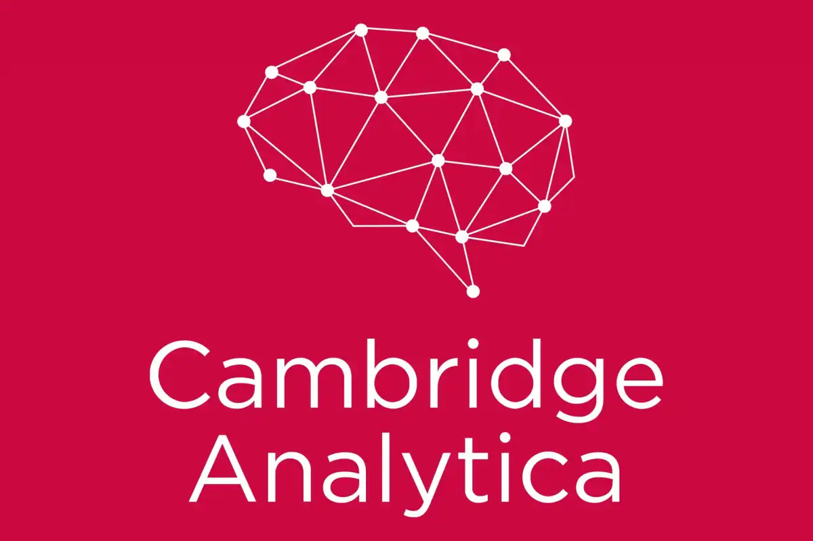

Juan Soler
Data Analyst and Digital Journal
En la era digital, los datos se han convertido en un activo invaluable, comparable al oro. Su poder no solo reside en la capacidad de influir en nuestras decisiones de compra, sino también en nuestra percepción y comportamiento. Sin embargo, el uso indebido de esta información digital puede derivar en la difusión de noticias falsas, extremismo y manipulación política. En este contexto, Cambridge Analytica emerge como un jugador clave, ejemplificando cómo los datos pueden ser utilizados para influir en la opinión pública.
Cambridge Analytica es una empresa británica que operaba en Estados Unidos, presentándose como una empresa de análisis de datos que utilizaba técnicas como machine learning y big data para influir en las decisiones de las personas hacia ciertos tópicos específicos. Su modelo de negocio estaba basado en ofrecer sus servicios principalmente a políticos para ser elegidos democráticamente.
La empresa recopilaba datos a través de intermediarios, que vendían información de usuarios de plataformas como Facebook. Esta red social proporcionó aproximadamente 50 millones de datos y metadatos de sus usuarios, obtenidos de diversas fuentes. Entre ellas, destacan las encuestas disfrazadas de juegos inofensivos, que en realidad servían para crear perfiles detallados de personalidad. Facebook también recababa metadatos extensos, como direcciones de correo electrónico, números telefónicos, direcciones de vivienda, registros de llamadas y datos de inicio de sesión, para trazar un completo grafo social de sus usuarios.
Cambridge Analytica llevó la segmentación de datos a un nivel superior, creando perfiles individualizados y mapeando ubicaciones residenciales para dirigir sus esfuerzos de manera hiper personalizada. No se limitaban a mostrar publicidad convencional; su estrategia incluía la radicalización y la difusión de noticias falsas para movilizar emocionalmente a su audiencia. Un claro ejemplo fue la elección presidencial de EE.UU. en 2016, donde utilizaron tácticas de desinformación contra Hillary Clinton para influir en el electorado indeciso a favor de Donald Trump. En el caso del Brexit, Cambridge Analytica, a través de su aliada AggregateIQ (AIQ), desplegó una estrategia similar, bombardeando a los votantes con noticias falsas y prejuicios para manipular su decisión.
El impacto de estas prácticas en los usuarios de redes sociales es profundo. La información personal es utilizada sin consentimiento y, en muchos casos, vendida a terceros. Esta realidad contribuye a un entorno en línea tóxico, donde los usuarios se ven bombardeados por información manipulada, generando ansiedad y desconfianza. Además, se pone en evidencia la vulnerabilidad de los datos personales y la facilidad con que pueden ser explotados para fines políticos y comerciales.
El caso de Cambridge Analytica ha provocado una oleada de respuestas legales y regulaciones a nivel mundial, destacando la necesidad de una mayor protección de datos. Se han implementado cambios en las políticas de privacidad y se ha incrementado la concienciación sobre la importancia de la seguridad de los datos personales.
Este caso subraya la necesidad de una mayor educación y concienciación sobre la importancia de la huella digital. Comprender el valor de nuestros datos y reconocer que, aunque no tengamos nada que ocultar, la información puede ser utilizada en nuestra contra es crucial para proteger nuestra privacidad y seguridad en línea.
El escándalo de Cambridge Analytica no es solo un caso aislado de mala gestión de datos; es un llamado de atención sobre la fragilidad de nuestra privacidad en la era digital. Este caso es inquietante en muchos niveles, pues nos enfrenta a una realidad desconcertante: de ahora en adelante, honestamente tendremos que preguntarnos si nuestras decisiones y opiniones son realmente nuestras, o si simplemente hemos sido engañados por una opinión basada en datos manipulados.
Data Analyst and Digital Journal